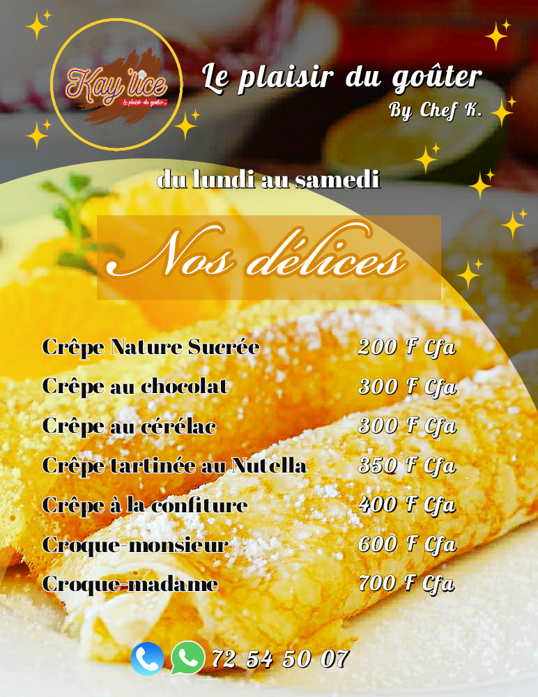
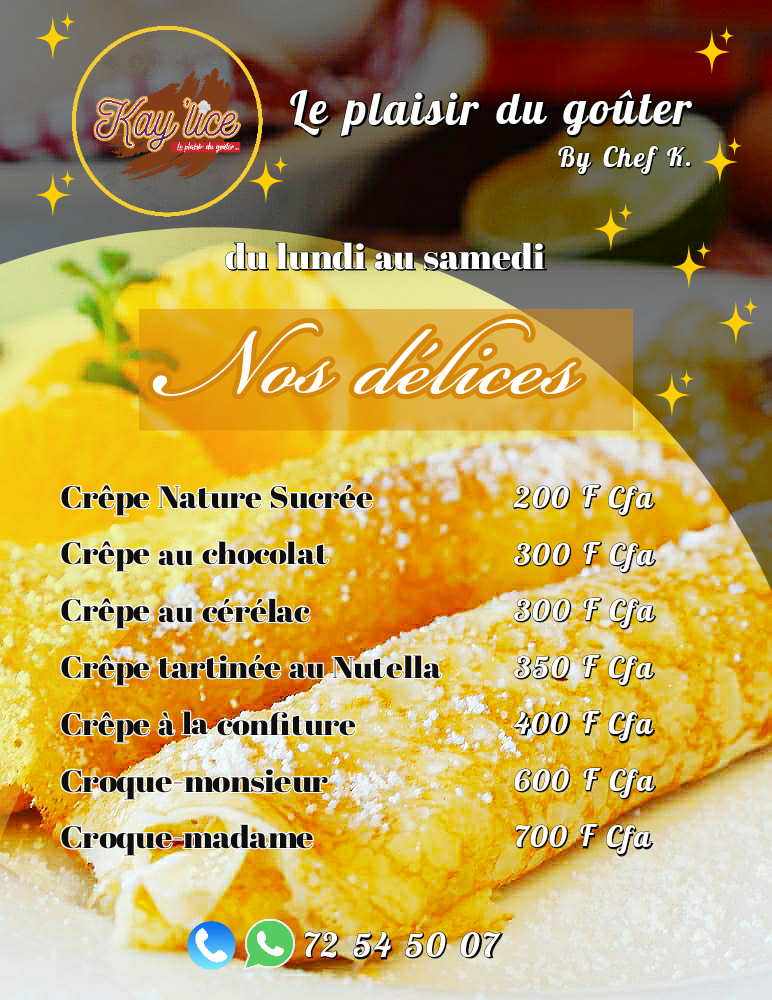

About Me
Ingénieur et digital lover
Hello, je suis ingénieur en Logistique et transports, diplômée de l'INPHB. Et je m’intéresse au digital depuis 2017 plus précisément. Au départ c’était le blogging (consultez mon blog)
Puis j’ai appris à utiliser des applications de créations de flyers sur mobile et sur PC. Elles m'ont permis, en plus de mon talent d'écriture d'animer mes réseaux sociaux et de réaliser des ventes.
Depuis 2020, j’ai opté pour le web design (UX/UI design) et le web development (front-end pour le moment).
Expériences professionnelles
| Période | Poste | Entreprise | Rôle |
|---|---|---|---|
| Sept 2020 - aujourd'hui | Community Manager & Customer Service Assistant |
Mentor Afro | Gestion de la présence digitale
Elaboration d’une ligne éditoriale Création de contenu sur les pages Innovation Proposition de contenu Gestion du service clients |
| 2020-auj (13 mois) | Digital & Sales Manager | Dyan Natural | Gestion de la présence digitale
Elaboration d’une ligne éditoriale Conversion des prospects Création de contenu sur les pages Vente des produits cosmétiques Gestion clientèle |
| 2019 (9 mois) | Customer Service Assistant | L'Oréal CI | Passation commandes
Traitement Factures fournisseurs Facturation client Contrôle et suivi des commandes Expédition commandes. Reporting et analyse données Recouvrement |
| 2019 (2 mois) | Agent Approvisionnement | Bernabé | Yeshi group | Passation commandes
Traitement factures fournisseurs Réception de commandes Inventaire Reporting |
Portfolio
Laissez-vous transporter dans mon univers
entre créas, posts et design de sites web !
1) Créations de visuels
je les fais simples, épurés et limpides
Souvent, ils se laissent transformer par le type d’activité…
 

… ou l’esprit derrière les textes

2) Type de publications
Parce que j’aime écrire, j’utilise ce talent soit pour rigoler
Un soir aux environs de 20h, dans un couloir d'Abidjan, une belle jeune dame passe. Un homme séduit par sa beauté, l'...
Posted by Régis-Marie on Saturday, January 16, 2021
Je me souviens encore, lors d'une veillée chrétienne, les gens étaient à fond dans la prière et une femme, avec sa...
Posted by Régis-Marie on Saturday, January 23, 2021
…Soit pour passer des messages forts
L'une d'entre les plus belles choses que je puis réaliser c'est d'aider les gens à se sentir mieux... mentalement. Je...
Posted by Régis-Marie on Saturday, December 5, 2020
Tu vis silencieusement avec ce mal... Personne ne peut le deviner. Il te ronge et personne ne peut te comprendre. Tu...
Posted by Régis-Marie on Saturday, November 14, 2020
… soit pour raconter une histoire:
Avant, lorsqu'on me rencontrait dans la rue, il fallait juste se concentrer sur mon joli visage innocent et passer son...
Posted by Régis-Marie on Thursday, December 17, 2020
J'ai compris ces dernières années que les talents, dons et autres aptitudes particulières que nous renfermons, ne nous...
Posted by Régis-Marie on Thursday, December 31, 2020
3) Comment je gère mes réseaux sociaux
Le digital c’est l’avenir…
Je me trouve donc sur tous les réseaux sociaux du moment
Soit pour animer, échanger, partager, rire et inspirer…
Soit pour comprendre leurs fonctionnements et m’en inspirer…
J'en ressors avec de nouvelles idées, toujours des choses à partager, à découvrir et via les réseaux sociaux, l'on arrive à toucher bien plus qu'on ne peut physiquement.
C'est réellement un moyen de challenger ma créativité, mon ouverture d'esprit et mon sens du partage!
Et là ! On arrête de parler de moi…
Il est temps que vous me racontiez votre histoire :